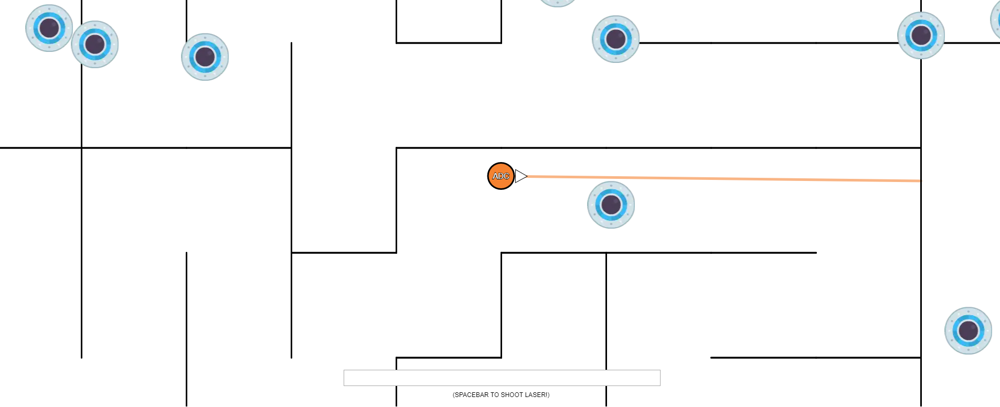
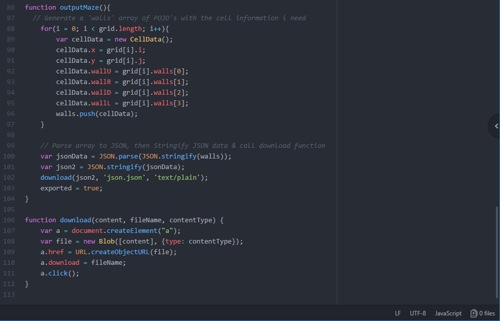
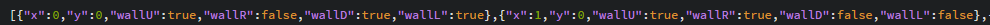
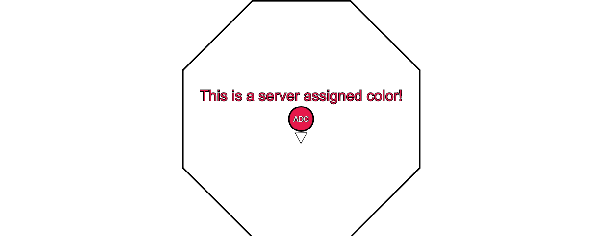
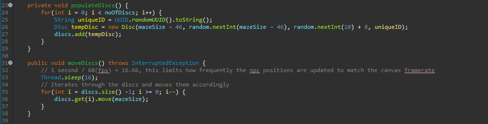
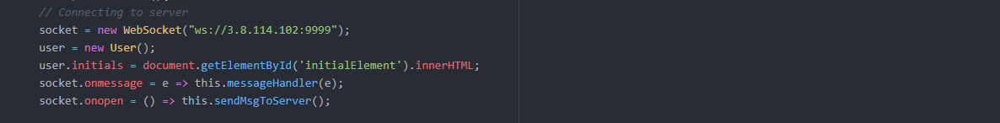
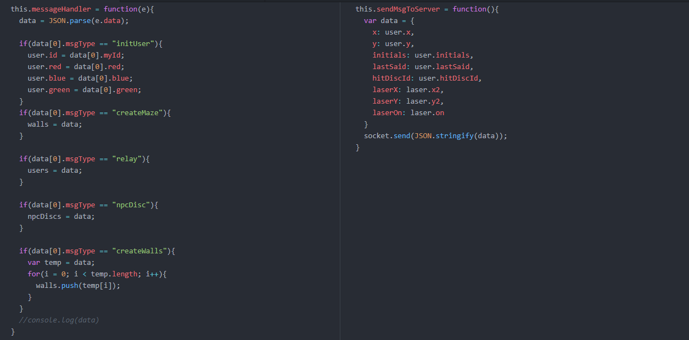

WebSockets - Online Multiplayer Maze

[A multiplayer maze complete with obstacle collison, server side enemies, chat system & more!]
Try 'Maze Escape' yourself!
Server Host : Amazon Web Services (EC2 Server running compiled JAR with dependancies)
Client Host : Hostdrop.eu
In this write up I'll be running through some of the key features in this project for both the backend and frontend.
I appreciate everything may not be explained in the below area, so if there are any unexplained components you're interested in learning about, please feel free to contact me.
Server Side
One of the features I wanted was the ability for the server to specify the maze, so my initial plan was to create a CSV file where I plot the co-ordinates and the server would distribute the data to the clients accordingly. I quickly saw the flaw in this when I was faced with plotting out an entire maze by hand, far too time consuming!
I decided to take a look into how to generate a maze and spent a few hours reading into recursive backtracking and some of the other alogirthms used for Mazes. Once I had a decent understanding of how it worked and knew I could adjust it to suit my needs, I expanded one of the many code examples I'd seen and altered it so that it would generate a JSON file with the relevant data.

This worked as intended however there was still one more obstacle to get past, which was the conversion of a maze cell to individual walls with X,Y positions. Below you can see a snippet of the JSON file generated, to solve this I looped through each cell, checking which walls were 'true'. I then created a wall based on their position cell position and also their wall position (Ie, right side wall would be X1,Y -> X1,Y1) which was multiplied by a variable called 'scale' to create the pixel distance of each wall.

Once that was completed, I just set the server to parse through the JSON file when it was launched, then when the websocket receives an connection (onOpen), I used GSON to convert the array of walls to a string and sent the new client the maze data.
So in the previous section I mentioned that users receive the maze details when they connect, but there are a couple more components to this. I wanted to ensure each user was given a unique color when connecting, as this helps easily identify who each person while you're moving through the maze quickly. To do this, when a user connects, they get given a random index number based on the 18 colors availables (this can be increased). The server checks this index isn't in use by comparing it against the colorLock hashset, if it has been used, the server re-rolls a new index position until it finds a color that's not in use, assigns the user that color and adds it to the colorLock.

Another attribute given to the user is an attachment to their connection, this attachment is a server based POJO containing their UserID & color. This is required because although the connections have a unique ID, we need to be able to inform all the other clients about this users color, otherwise the clients would lose their color when receiving an update/relay from the server.
One of the more interesting features I added to this project was server sided objects, I wanted to implement an element of challenge into completing the maze so I introduced flying discs that send you back to the begining if you get hit by them... So first off I found a royalty free image from opengameart.org and built a POJO that represents an ellipse with the same diameter. Now that we had the object setup, it was time to populate them and move them across the canvas.

As you can see, I have a variable that lets me assign the number of discs I want to spawn. We then create a loop that generates a disc corresponding to this number, each disc requires an X position (which I set to the length of the maze, minus their radius) and a Y position, which is randomly generated. The final 2 parameters are a speed variable and also a uniqueID, which is needed for removing the disc when the client hits them with their laser.
I then had to replicate movement, so I have a function called moveDiscs, which loops through the discs and moves them by their set speed. This also caused the need for a direction variable on the disc class, so they do not run outside the maze. So I added this to the disc class and send them the mazesize when they move, so if their next movement is outside this parameter, they change direction instead.
The final thing to add was in relation to the client side, as I mentioned earlier I have designed this project so that the user can shoot the discs down. When the user hits a disc, they send the discId to the server and it calls a function 'resetDisc', this basically removes the corresponding disc from the servers array of discs and adds a new disc at a random location.
So that's it right?... Well not quite!
I wanted to check the performance of these new additions, so I relayed my server through a host in America and had myself and a friend test the performance. Once I spawned 200 discs, an issue became quite apparent. The high bandwidth of 200 positions being updated every 16ms was causing a high latency, which in turn was causing a de-sync between the server discs X,Y position and the clients disc positions. To resolve this issue, I changed how the server updates the clients regarding the disc positions. Instead of sending each client all of the discs positions and updating them constantly, I have the server check the users X,Y position and send them the discs that are within a nearby distance to them, greatly reducing the incoming data on the client end!
To showcase this, below is footage of the game on a high res monitor (1440p) and you can see the enemies don't show until their within a 1000 pixel range. This value can be adjust or I could have the user send their screenwidth upon connecting, to ensure each user get's the completely experience.

So I've discussed some of the features that the server provides, so let's talk about the communication aspect of things. The majority of this happens with the MazeWebSocketServer, which is a class I created that extends WebSocketServer from the org.java-websocket framework. This class has 5 methods which it must implement, so I'll run through each of these in layman's terms to explain what each component does.
- public void onOpen(WebSocket conn, ClientHandshake handshake)
Creates a User, assigns color & ID, attaches User to Connection.
Adds User & Connection to array of live users/connections.
Updates NPC relay (for sending enemies) with new connecions array.
Sends the connection their User info & Maze info as JSON files.
- public void onClose(WebSocket conn, int code, String reason, boolean remote)
Loops through Users, finds User ID that matches connection ID.
Removes user from array, removes colorLock & removes connection.
Updates NPC relay (for sending enemies) with new connecions array.
Sends all other connections a new User list, disconnecting them client side.
- public void onMessage(WebSocket conn, String message)
Convert client message to a temp. User via GSON.
Loops through Users, finds User ID that matches connection ID.
Updates User with their new details, taken from temp. User.
If the user reports their laser hit a disc, call the function to remove that disc.
Loop through all connections, updating them with this users new details.
- public void onError(WebSocket conn, Exception ex)
Print out exception
Checks the connection isn't null, then calls onClose to disconnect them.
- public void onStart()
Starts up npcRelay, this function is only called once upon the server starting.
Client Side
While this project doesn't require too many inputs from the user, I did want to quickly explain the inputs it does allow. The idea was for this to be a simplistic game that everyone would be able to use, so on the main menu I highlight the few key inputs required to help them. Once they connect to the maze, I also have a reminder of how to use the laser. The reasoning for this is due to user feedback, almost every person who has tried Maze Escape was able to move around without any issues but some of them couldn't remember how to fire the laser and I didn't want them to reload the game to figure out how.
Chat system - Firstly, I wanted a chat system that was integrated into the display, to acomplish this i created a javascript DOM element that overlays the display and centralised it towards the bottom of the screen. Once I was happy with the position, I needed to decide how the user accessed this and the two obvious ways were the 'Enter' key and also clicking into the input box. This presented an issue though, as the user would move around on the screen whilst typing. My initial solution was to use the .onFocus event to check if the chatbox was active but unfortunately as this was a JavaScript DOM element, this function isn't available. So my solution was to create a boolean called 'typing' and only allow the user to interact with the game if this was false.
Mobility - The game uses W,A,S,D and every frame the game calls a function, checkMovement. This function firstly checks if the user is typing, then checks which key is being held down. I used this website (https://css-tricks.com/snippets/javascript/javascript-keycodes/#article-header-id-1) to find the keyCode that corresponds to the keys I wanted to check. If the user was pressing W,A,S or D then it moved their X,Y co-ordinates accordingly.
For the visuals, I decided to use the P5.js library which is an open source library that is designed for the visual arts community to creating drawings, animations & interactive programs. There are two main components when coding in P5, those are the setup function and the draw function. Within setup we initialise components that only need to be created once (connection to server, creation of canvas, etc). The draw function is a continous loop that repeats itself every frame, so your framerate will determine how often this loop repeats per second. So in this section, i'll give you a brief overview of what happens during my draw function.
Centre the player - This is done by using a function called translate, which displaces the objects by the parameter you set.
Drawing the player - We take the User class that's created by the server initialisation message, draw an ellipse at it's X,Y position & fill it with the RGB value given. We then check if the user has said anything within the past 6 seconds and if they have, draw that text centred above the X,Y position.
Drawing the laser - First off, we have a boolean which becomes 'true' only when the spacebar is held down, so it checks that value before it draws anything. By default the laser is extended 3 times the distance between your X,Y position and your mouse position. So firstly we check if the laser hit a wall and if it has, set the end location to the position that did so.
Drawing the pointer - I start by getting the angle between the users X,Y position and their mouse position, using the function atan2 (https://en.wikipedia.org/wiki/Atan2). Once I have this value, I draw a triangle in the centre of the screen, offset by the radius of the circle. This triangle is then rotated using the angle calculated to keep it always pointing in this position. It's also work noting the user of the push() and pop() function here, this seperates the codeblock from the rest of the items in draw, to ensure the whole screen isn't being constantly rotated by this angle too.
Drawing the maze - For this we loop through the array of walls, received from their server. Each line requires 4 parameters and are drawn as follows line(walls[i].x1, walls[i].y1, walls[i].x2, walls[i].y2). Whilst the walls are being drawn, we also check if the player position is within the line (due to them moving) and if it is, we send them back to their previous position prior to moving.
Drawing other players - This uses the same technique as drawing ourselves, except we loop through the array of users and use their values insteads.
Drawing the enemies - While this is similar to the above, there are a couple of key differences. The first is that we draw an image in the location rather than ellipse but the primary difference is in regards to collision. As mentioned before users can shoot the enemies down, so we check to see if the laser is touching the disc and if it is, remove that disc and report it back to the server. The other collision is player collision, so we also check if this occurs and if it does, send the user back to the starting location.
If you are interesting in how collision works within a 2D enviroment, I would like to refer you to Jeffrey Thompson's explaination of them (http://www.jeffreythompson.org/collision-detection/). Prior to reading this, I was only able to handle collision between 2 circles, which was relatively simple by taking the distance between their vectors and checking if that was less than the sum of their radiuses.
I wanted to explain how the client handles the communication to the server and this starts within the p5 function setup. Firstly we create a new WebSocket which takes the server address & port as the parameter. Then we create our event listeners, which are socket.onmessage which waits to receive data from the server and when it does, it takes that data and calls a function I created called messageHandler, using the data as a parameter. The other event is the socket.onopen, which waits for the server connection to be established, once this happens the client calls a function sendMsgToServer.

If you've read through the server side section above, you will recall that the client receives various kinds of communication, ranging from the User initialisation to the entire Maze layout. One of the questions you might have is, how does the client distinguish what type of data it is receiving? Well a solution I came up with was to send everything to the client as an array and for every object that is sent, that object also sends what 'type' of object it is. So as you can see on the left-hand side of the image below, this makes it very easy for the client to indentify the data by checking the data[0].msgType.

As to the function on the right-hand side? Well this is the sendMsgToServer function I mentioned earlier, this function is called almost constantly while the user is connected. It updates the server with the client location, initials, last message (chat system), if it hit an enemy (disc) & finally it's laser position.
Overall I'm quite happy with how I structured this, it made adding new features to whole system quite easy.